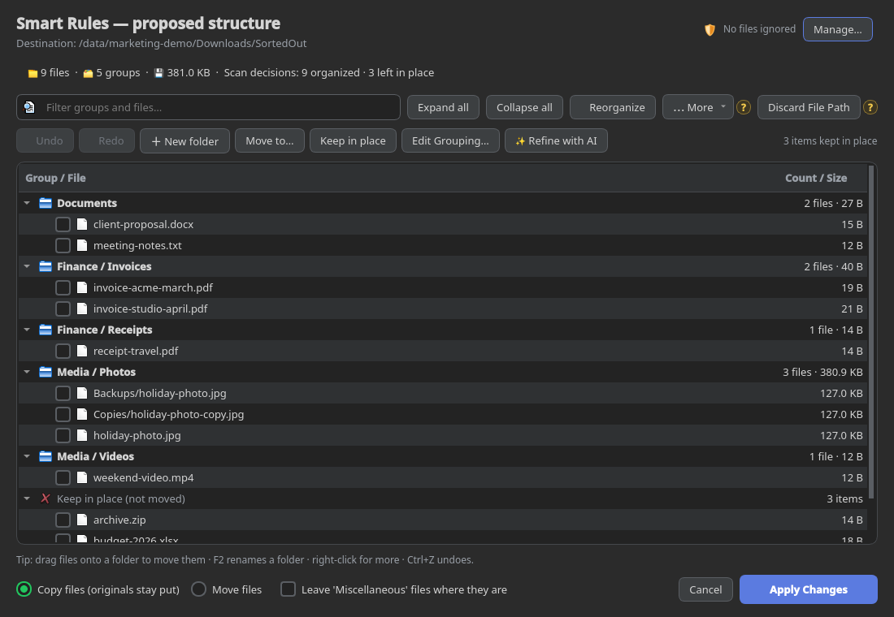
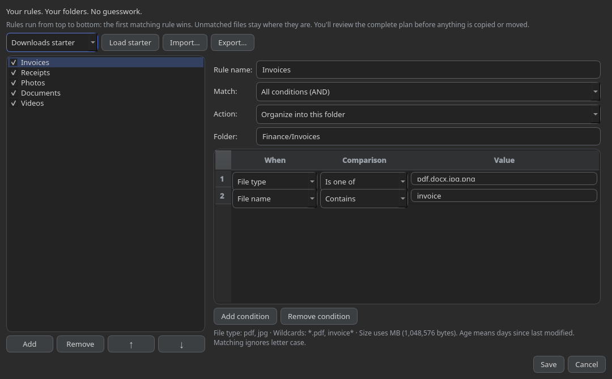
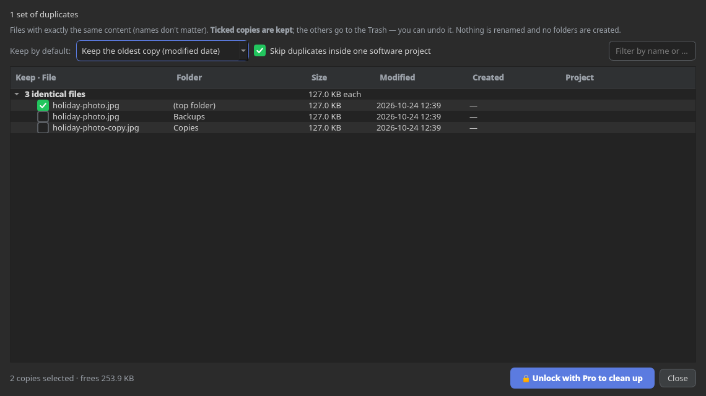
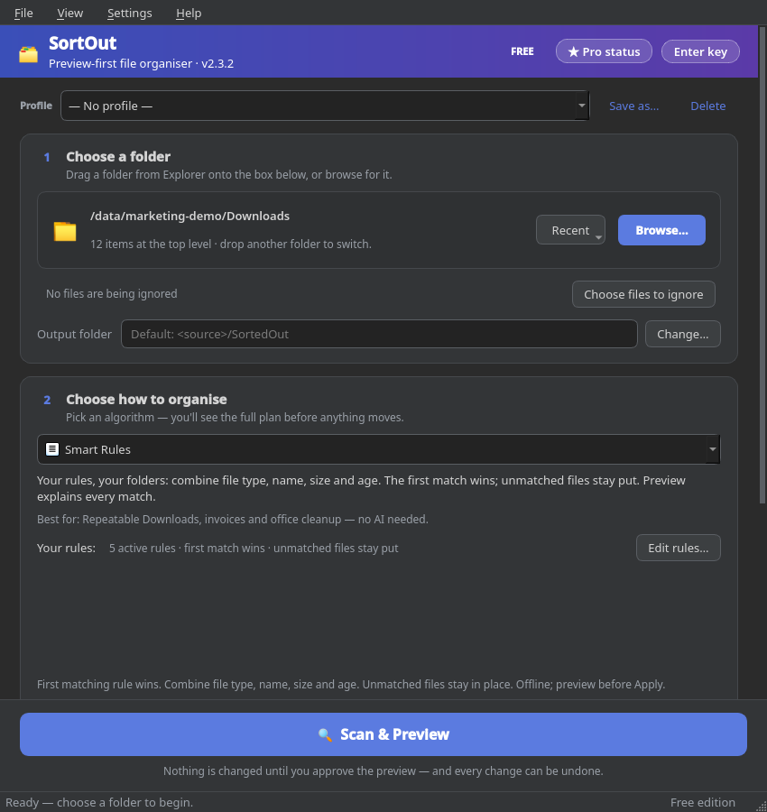
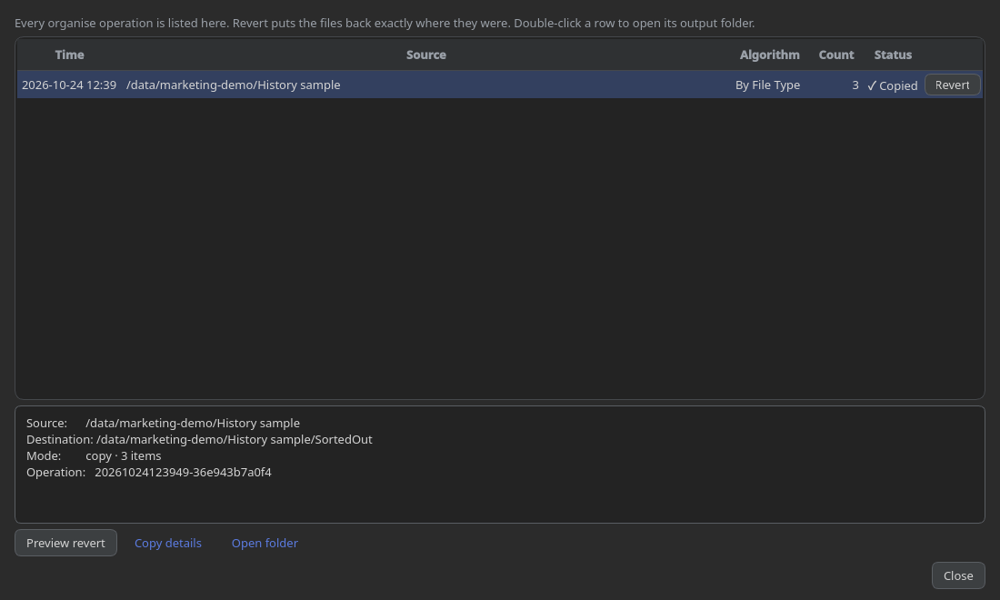

Start with how you work.
Pick file type, names, dates or your own rules. Reuse a profile instead of setting everything up again.
YOUR FILES. YOUR RULES.
A crowded Downloads folder doesn't need another afternoon. Turn it into a clear, editable plan—then organize on your terms.
Windows x64 · Free tools need no account
No background watcher moving files behind your back.

FROM PILE TO PLAN
You choose the folder, the method and the moment anything changes. SortOut handles the filing—not the decisions that belong to you.
Pick file type, names, dates or your own rules. Reuse a profile instead of setting everything up again.
Inspect folders and files. Rename, regroup, drag items or keep them in place. Undo plan edits before applying.
Copy is the default. Confirm the operation and follow apply progress; History keeps the operation record for Undo.
SMART RULES · FREE
Invoices into Finance. Photos into Media. Private names left alone. Combine conditions in a visual editor, put them in order, and let the first matching rule decide.
Rules use metadata, not document contents. Unmatched files stay put. Age means days since last modified.

A METHOD FOR EVERY KIND OF MESS
Eight organizing algorithms are Free to preview and apply. Two advanced algorithms are Free to preview; applying their results requires Pro.
Separate images, documents, music and more by extension. Add extension subfolders when useful.
For a quick mixed-folder reset.
Combine metadata conditions into ordered rules. Send matches to your folders; leave the rest where they are.
For your repeatable Downloads routine.
Group meaningful prefixes and similar filenames with an adjustable similarity setting.
For report versions, exports and series.
Create year, month or quarter groups from last-modified dates—not photo EXIF capture dates.
For scans and time-based archives.
Group files into Tiny, Small, Medium and Large buckets to separate bulky files from smaller ones.
For size-based folder organization.
Use words such as invoice, receipt or contract. The first matching filename keyword wins.
For names that already tell a story.
Collect matches using a Python regular expression against filenames without their extensions.
For precise naming conventions.
Bring selected files into one group. Keep relative paths or choose to flatten them with the path controls.
For bringing scattered files together.
Find byte-identical files, even under different names. Choose copies to keep before sending extras to the bin.
For duplicate photos, videos and downloads.
Ask a selected AI provider to propose folders from filenames and your instructions. Review before applying.
For names that don't follow one pattern.
Project / Code Detector is parked for a future release, not included among these 10 algorithms.
DUPLICATE FINDER
Matching names aren't enough. SortOut checks file contents locally with SHA-256, then lets you choose which copy stays. No uploads are needed for duplicate matching.
Review is Free; cleanup requires Pro. Whole-drive scans can take time. Bin cleanup has drive/path limits; Undo depends on retained records and available files. This is exact matching, not similar-photo detection.

OPTIONAL AI GROUPING
Try instructions like “group by client” or “separate work from personal.” Choose OpenAI, Gemini, Claude, an OpenAI-compatible service, or a configured local Ollama endpoint.
Cloud AI receives names, relative paths and instructions after consent—not file contents in the current pipeline. Bring your own provider access; provider charges are separate. A local Ollama endpoint can keep requests local when cloud fallback is not used.
AI suggestions can be wrong. Preview them; you still approve the plan.
THE SMALL CONTROLS MATTER
Keep a reusable setup. Exclude what should stay untouched. Change a proposed folder name. Check what happened last time. These aren't upgrade extras—they're part of the Free workflow.
Save setups, switch themes and remember window settings.
Use ignore rules and choose whether to include subfolders or hidden files.
Rename, move, merge or keep items; filter the tree and inspect plan statistics.
Import/export plan JSON or use the CLI with --dry-run.


HISTORY & UNDO · FREE
Review operation details and revert a recorded run when its files and destinations are still available. Apply progress tells you when preparation gives way to copying or moving.
Undo is not a backup. Keep a separate copy of important files. Logs, settings and Undo records can contain paths and are not all encrypted.
START WITH THE VALUE YOU CAN SEE
Your everyday organizing toolkit.
Apply the advanced results you reviewed.
Hosted checkout, email delivery and the new activation flow are not connected. Do not buy a merchant key expecting it to activate this build.
Checkout disabledExisting privately issued machine-bound keys remain supported. New pricing and entitlements will be shown only when finalized.
A FOLDER YOU CAN REVIEW IS A GOOD PLACE TO START
SortOut 2.3.2 Qt6 Free preview · Windows x64. Start with a small disposable folder, see the plan, and decide for yourself. No payment is needed for Free features.
Install for your Windows user. Includes its runtime; no admin access or additional download is intended during installation.
Download offline installerExtract the whole ZIP into a writable folder and run SortOut. Keep the companion files together.
Download portable ZIPPackages are unsigned; Windows may show a publisher or reputation warning. Verify the source and checksums before deciding to run. Updates are manual, not automatic. Microsoft Store availability is not yet approved.
Release notes, checksums & third-party sources →STRAIGHT ANSWERS
No mystery claims. No hidden upgrade for the ordinary organizing tools.
No background watcher is included. You select a folder, scan, review and confirm. Scanning doesn't move your files.
Where permissions allow, yes—but start small. File count, storage speed and duplicate candidates affect scan time. Cache reuse does not skip file enumeration or make whole-drive scanning instant.
Ordinary sorting and duplicate hashing run locally; Free tools need no SortOut account. Cloud AI requires configured provider access and a network connection. Provider fees are separate. No built-in advertising or usage telemetry is included.
No. Duplicate Finder checks exact file contents. Different edits, crops or encodings of a photo are not necessarily duplicates.
No. Reverting depends on the operation records, files and destinations remaining available. Keep independent backups and test with disposable files first.
Not yet. Merchant checkout and the new activation integration must be tested before sales open. Legal documents in the app are review drafts, not effective purchase terms. Required seller details, final terms and applicable legal review remain pending.
Project / Code Detector, a background watcher, automatic updates, macOS/Linux distribution and Microsoft Store approval are not included in the current Windows release.